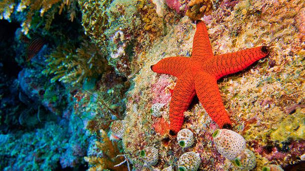

The Alligator Gar is one of the largest freshwater fish in the world. Recognized by its long snout and sharp teeth, this ancient species has survived for millions of years. Its powerful appearance and unique features make it one of the most fascinating creatures of aquatic ecosystems

The Tilapia is a popular freshwater fish known for its adaptability and widespread distribution. Its shimmering scales and peaceful nature make it a common sight in lakes, rivers, and aquaculture farms around the world. Tilapia plays an important role in global fish farming and aquatic ecosystems

The Stingray is a graceful marine animal known for its wing-like fins and smooth gliding movements. Found in oceans around the world, it effortlessly glides through the water, creating a mesmerizing underwater spectacle. Its unique shape and elegance make it one of the ocean's most fascinating creatures.

The Humpback Whale is a magnificent marine mammal known for its massive size, graceful movements, and haunting underwater songs. Found in oceans around the world, these gentle giants migrate thousands of kilometers each year, making them one of the most remarkable creatures of the sea.

Dolphins are highly intelligent marine mammals known for their playful behavior, remarkable communication skills, and graceful movements. Found in oceans around the world, these social creatures travel in groups and captivate observers with their speed, agility, and friendly nature.

The Sea Turtle is a remarkable marine reptile known for its long lifespan, graceful swimming, and epic ocean migrations. These gentle creatures glide effortlessly through coral reefs and open waters, playing a vital role in maintaining healthy marine ecosystems. Their resilience and beauty have made them a symbol of the ocean's natural wonders

The Shark is a powerful marine predator that has ruled the oceans for millions of years. Known for its speed, strength, and sharp senses, it is one of the most fascinating creatures of the underwater world. Sharks help maintain healthy ocean ecosystems and symbolize the untamed power of the sea

The Yellow Tang is a vibrant tropical fish known for its brilliant yellow color and graceful swimming style. Found in coral reef ecosystems, this eye-catching species adds beauty and life to the underwater world. Its striking appearance makes it one of the most admired reef fish.

The Whale Shark is the largest fish in the world, recognized by its enormous size and beautiful pattern of white spots. Despite its massive appearance, this gentle giant feeds mainly on plankton and poses no threat to humans. Its graceful presence makes it one of the ocean's most extraordinary creatures.

The Trumpetfish is a fascinating marine species known for its long, slender body and distinctive tube-shaped snout. Often found among coral reefs and seagrass beds, this elegant fish uses stealth and camouflage to approach its prey. Its unique appearance makes it one of the most recognizable fish in the underwater world.

The Seahorse is one of the ocean's most unique and enchanting creatures. Known for its horse-like head, curled tail, and graceful movements, it drifts gently through seagrass beds and coral reefs. Despite its small size, the seahorse plays an important role in marine ecosystems and is admired for its extraordinary appearance

The Starfish is a fascinating marine creature recognized for its star-shaped body and vibrant colors. Found on coral reefs and ocean floors, it plays an important role in maintaining marine ecosystems. Its remarkable ability to regenerate lost limbs makes it one of the ocean's most extraordinary animals.

The Pufferfish is one of the ocean's most remarkable creatures, famous for its ability to inflate its body when threatened. Covered with tiny spines and possessing a unique round shape, this fascinating fish combines beauty, intelligence, and a clever defense mechanism that helps it survive in the underwater world

The Octopus is one of the ocean's most intelligent and fascinating creatures. With eight flexible arms, remarkable problem-solving abilities, and the power to change color for camouflage, it is a true master of survival. Found in oceans around the world, the octopus captivates marine enthusiasts with its unique appearance and extraordinary behavior.

The Unicornfish is a fascinating reef fish recognized by the horn-like projection on its forehead. Found in tropical oceans, it glides gracefully through coral reefs and plays an important role in maintaining healthy marine ecosystems. Its unusual appearance makes it one of the most distinctive fish in the underwater world